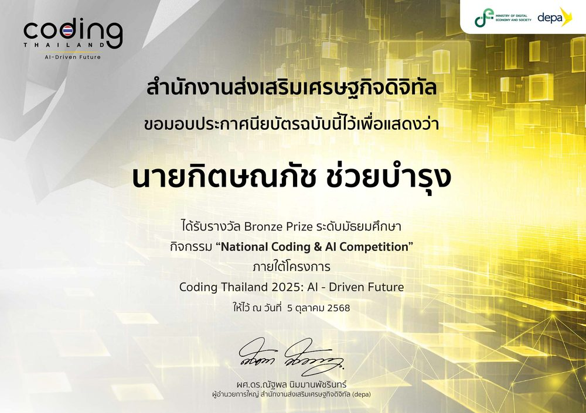
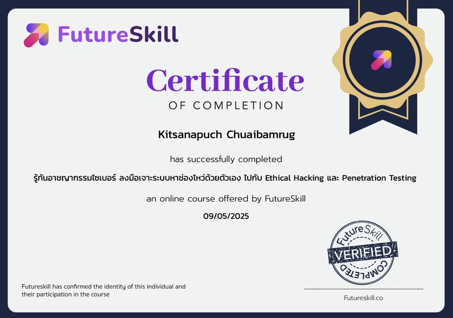

ประกาศนียบัตร
AI FOR ALL HACKATHON — การใช้งาน Amazon Quick
ผ่านการอบรมการใช้งาน Amazon Quick ภายใต้โครงการ AI FOR ALL HACKATHON

U Hackathon — AI Track
เกียรติบัตรการเข้าร่วม U Hackathon สาย AI Track เพื่อยกย่องความคิดสร้างสรรค์และการทำงานร่วมกัน

Discovery Piscine — Web Programming Essentials
เกียรติบัตรเข้าร่วมการอบรมเขียนโปรแกรมเว็บจาก 42 Bangkok สจล. ระหว่างวันที่ 12–16 ตุลาคม 2026

รางวัลเหรียญทองแดง — การแข่งขัน National Coding & AI Competition, Coding Thailand 2025: AI-Driven Future มอบโดย depa (สำนักงานส่งเสริมเศรษฐกิจดิจิทัล)

FutureSkill — ประกาศนียบัตรสำเร็จหลักสูตร: "Ethical Hacking and Penetration Testing" (รู้ทันอาชญากรรมไซเบอร์ ลงมือเจาะระบบหาช่องโหว่ด้วยตัวเอง ไปกับ Ethical Hacking และ Penetration Testing), สำเร็จเมื่อ 09/05/2025

หลักสูตรด้านความมั่นคงปลอดภัยไซเบอร์ ระดับผู้เชี่ยวชาญ
ผ่านการอบรมหลักสูตร Cybersecurity Professional Course ผ่านระบบ NCSA e-Learning จำนวน 20 ชั่วโมง ได้รับประกาศนียบัตรจากสำนักงานคณะกรรมการการรักษาความมั่นคงปลอดภัยไซเบอร์แห่งชาติ (สกมช.)